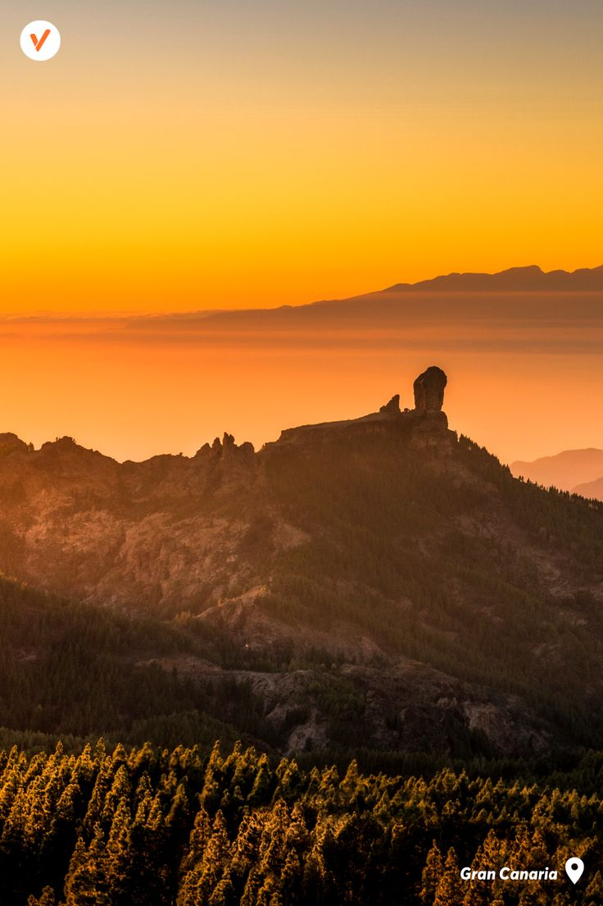
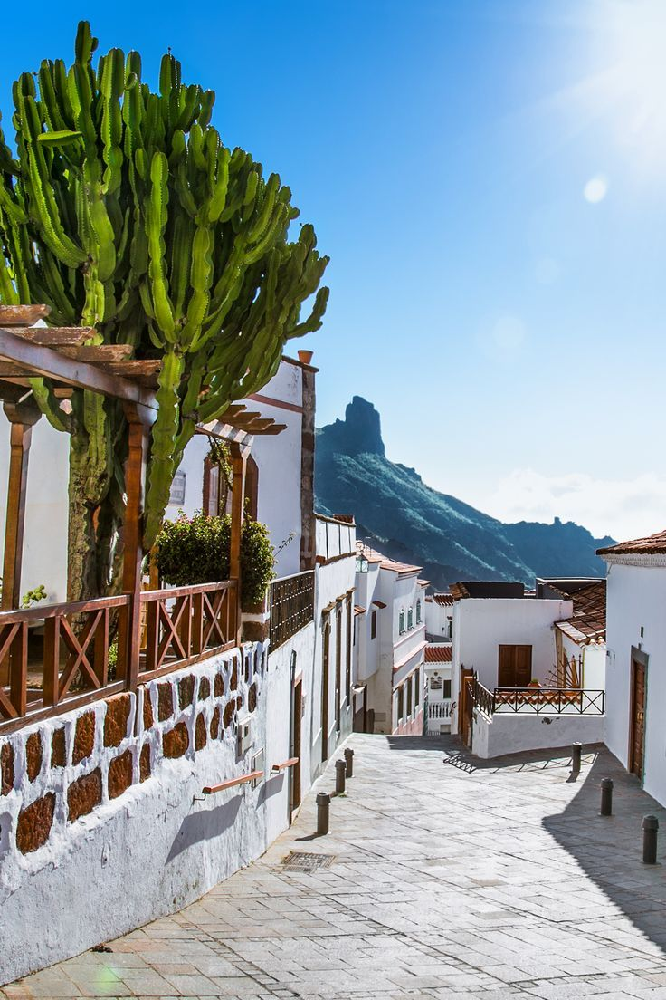
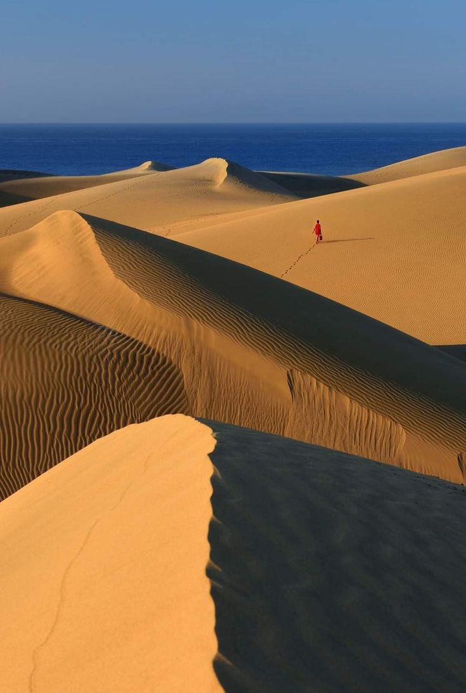
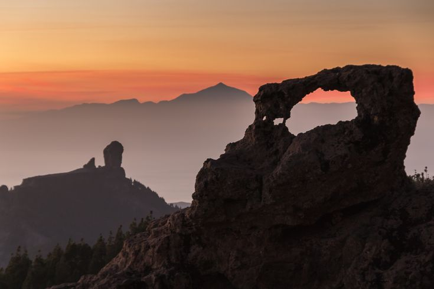
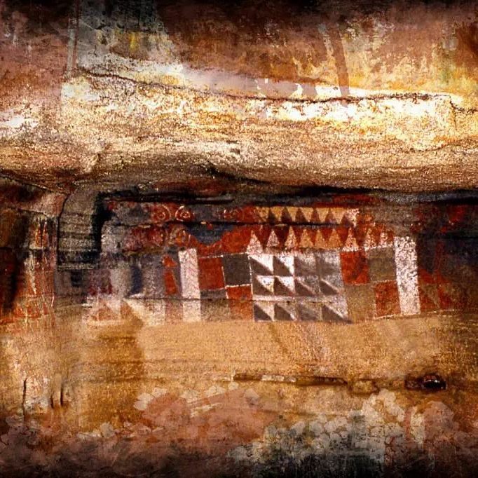
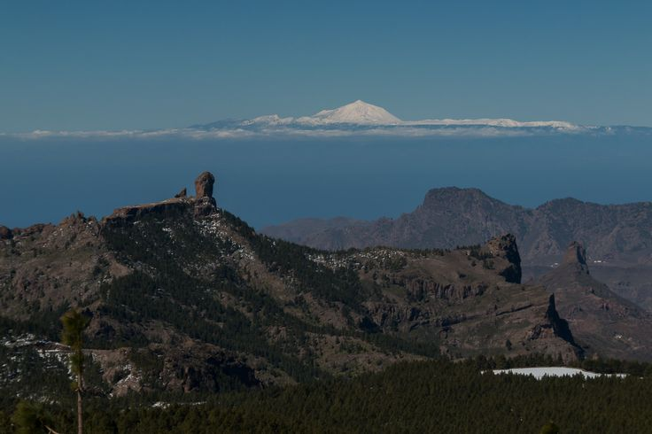
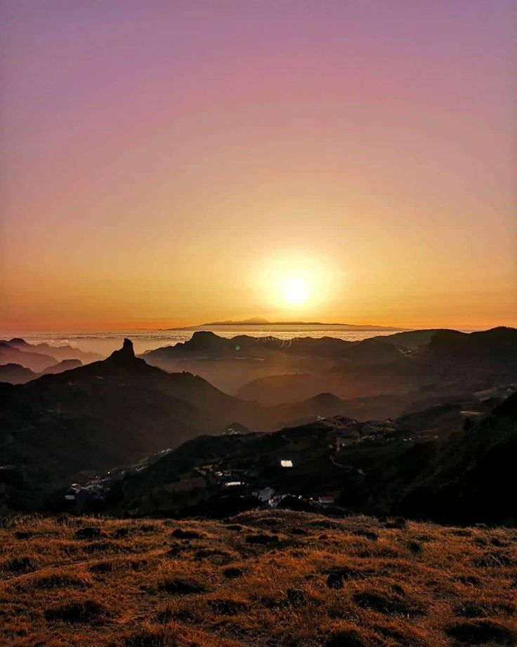
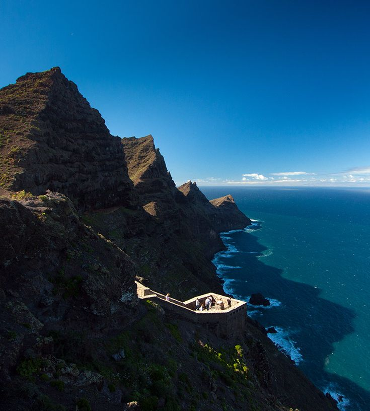

Lieux à Visiter

Roque Nublo

Village de Tejeda

Dunes de Maspalomas

Fenêtre du Nublo

Grotte Peinte de Gáldar
Site archéologique avec peintures rupestres et centre d'interprétation.
Points de Vue Spectaculaires

Pico des Puits de Neige
Vue panoramique du centre de l'île et du Roque Nublo.

Mirador Degollada de Becerra
Vue sur la caldeira de Tejeda, accès facile en voiture.

Mirador del Balcón
Falaises spectaculaires sur l'Atlantique. Un balcon naturel unique.
Sentiers depuis La Culata
Autres Sentiers Recommandés
Ravin de Guayadeque
Randonnée entre maisons troglodytes et nature authentique.
⏱️ 2h 30min · Facile–Moyenne
Agaete - El Risco (sentier côtier)
Chemin maritime avec vues spectaculaires sur l'Atlantique.
⏱️ 3h · Moyenne
Cruz de Tejeda - Pico de las Nieves
Parcours en altitude sur la crête centrale de l'île.
⏱️ 4h · Difficile
Artenara – Acusa Seca – Cuevas del Rey
Route archéologique et paysagère avec vues sur le Bentayga.
⏱️ 3h · Moyenne
Tamadaba - Llanos de la Mimbre
Sentier à travers les plus anciennes forêts de pins des Canaries.
⏱️ 4h · Difficile
Services Locaux
Restaurant Roque Nublo
À 5 minutes à pied, cuisine canarienne avec produits locaux.